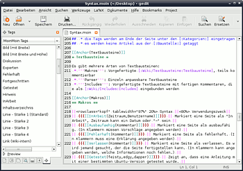

Hilfsmittel
Dieser Artikel wurde für die folgenden Ubuntu-Versionen getestet:
Zum Verständnis dieses Artikels sind folgende Seiten hilfreich:
Diese Seite zeigt Hilfsmittel die beim Schreiben von Wiki-Artikeln hilfreich sind für die Wikisoftware MoinMoin, welche bis zur Einführung von Inyoka bei Ubuntuusers zum Einsatz kam. Die aufgeführten Hilfsmittel eignen sich jedoch sehr gut zum produktiven Einsatz am eigenen Wiki oder einem anderen Wiki, welches MoinMoin nutzt. Es müssen lediglich einige Änderungen an den Dateien vorgenommen werden.
Desktop-Wiki¶
Von MoinMoin  , gibt es eine so genannte DesktopEdition, die für eine einfache Installation optimiert ist und einen eigenen Webserver mitbringt.
, gibt es eine so genannte DesktopEdition, die für eine einfache Installation optimiert ist und einen eigenen Webserver mitbringt.
Vom ubuntuusers-Wiki gab es regelmäßig einen Snapshot, der die aktuellen Artikel sowie die ubuntuusers-Themes und -Erweiterungen enthiet. Diese älteren Snapshots gab es in zwei unterschiedlichen Versionen. Zu finden sind diese unter:
Installation¶
Zuerst wird die aktuelle MoinMoin DesktopEdition von SourceForge  heruntergeladen und in einem beliebigen Verzeichnis entpackt [2]. Dabei wird ein Verzeichnis moin-desktop erstellt, dieses muss man in moin-desktop-uu umbenennen. Dann lädt man einen ubuntuusers-Wiki-Snapshot herunter und entpackt [2] ihn im selben Verzeichnis in dem zuvor die MoinMoin-DesktopEdition entpackt wurde, so dass die Dateien ins Verzeichnis moin-desktop-uu entpackt werden (das Überschreiben existierender Dateien muss erlaubt sein!).
heruntergeladen und in einem beliebigen Verzeichnis entpackt [2]. Dabei wird ein Verzeichnis moin-desktop erstellt, dieses muss man in moin-desktop-uu umbenennen. Dann lädt man einen ubuntuusers-Wiki-Snapshot herunter und entpackt [2] ihn im selben Verzeichnis in dem zuvor die MoinMoin-DesktopEdition entpackt wurde, so dass die Dateien ins Verzeichnis moin-desktop-uu entpackt werden (das Überschreiben existierender Dateien muss erlaubt sein!).
Alternativ die an das ursprüngliche Design von Ubuntuusers angepaßte Variante nutzen. Diese kann von hier bezogen werden. Diese muß aber noch auf den aktuellen Stand gebracht werden.
Um das Desktop-Wiki zu starten wechselt man in einem Terminal [3] in das Verzeichnis moin-desktop-uu und führt den Befehl
python moin.py
aus. Mit Strg + C oder einfach durch Schließen des Terminalfensters kann man das Wiki wieder beenden. Alternativ kann man auch mit dem Dateibrowser in das Verzeichnis moin-desktop-uu wechseln und moin.py doppelklicken. Dabei entweder "in Terminal ausführen" wählen, oder, wenn man kein Terminal-Fenster will, "ausführen", dann kann man das Desktop-Wiki allerdings nicht mehr so leicht beenden.
Jetzt kann man das Desktop-Wiki unter http://localhost:8080/ aufrufen.
Hinweis:
Wenn man das Desktop-Wiki auf einem anderen Port laufen lassen will, kann man einen selbstgewählten Port an den Start-Befehl anhängen. Damit kann zum Beispiel mit dem Aufruf python moin.py 8765 der Port 8765 genutzt werden. Die im Browser aufzurufende Adresse ändert sich dann natürlich entsprechend zu http://localhost:8765. Außerdem kann man auch einen Hostnamen angeben, auf dem der Server horchen soll (standardmäßig tut er das nur auf 127.0.0.1), weitere Informationen dazu sind in der Datei moin.py beschrieben.
Anpassen des Themes¶
Das Desktop-Wiki wird standardmäßig mit einem blauen Theme ausgeliefert, damit es besser vom „normalen“ Wiki unterschieden werden kann. Das bekannte braune Theme liegt aber bei, wer will, kann es wieder aktivieren. Dazu muss man in der Datei wikiconfig.py die Zeile
theme_default='human'
hinzufügen bzw. auskommentieren (das # wegmachen).
Deinstallation¶
Um das Desktop-Wiki zu entfernen, einfach das Verzeichnis moin-desktop-uu löschen.
Editorenunterstützung¶

gedit¶
Taglist¶
Für gedit gibt es eine Taglist, die es ermöglicht per simplem Doppelklick alle Wiki-Befehle in ein Dokument einzutragen. Für die Verwendung sind folgende Schritte notwendig:
Die Datei attachment:MoinMoin.tags
herunterladen und dann mit Root-Rechten nach /usr/share/gedit-2/taglist/ kopieren. gedit starten und unter "Bearbeiten -> Einstellungen -> Plugins" das Plugin "Floskelliste" (im Englischen sinnvoller "Taglist" genannt) aktivieren.
Unter "Ansicht -> Seitenleiste" die Seitenleiste einblenden und ganz unten links auf das blaue "Plus" klicken.
Im DropDown-Feld auf der linken Seite oben "MoinMoin Tags" auswählen.
Ein Doppelklick auf ein Element fügt dieses dann im aktuellen Dokument ein.
Syntax-Highlighting¶
Ab Gutsy¶
Ab Gutsy Gibbon wird gtksourceview-2.0 unterstützt. Die Datei attachment:moinmoin2.lang wird unter /usr/share/gtksourceview-2.0/language-specs/moinmoin.lang gespeichert. Dabei werden Root-Rechte benötigt.
Bis Feisty¶
Bis Feisty muss die XML-Datei gtksourceview-1.0-kompatibel sein. Die Datei attachment:moinmoin1.lang speichert man nun entweder
systemweit unter /usr/share/gtksourceview-1.0/language-specs/moinmoin.lang oder
im Benutzerverzeichnis unter ~/.gnome2/gtksourceview-1.0/language-specs/moinmoin.lang.
Anschließend den Editor öffnen oder neu starten, dann kann unter "Ansicht -> Hervorhebung -> Markup -> MoinMoin" ausgewählt werden.
Vim¶
Für Vim gibt es eine Erweiterung , welche die Wiki-Syntax farblich hervorhebt.
Um diese zu benutzen, sind folgende Schritte nötig:
In die Datei ~/.vim/filetype.vim muss der folgende Text hinzugefügt werden:
augroup filetypedetect au BufNewFile,BufRead *.moin setf moin au BufNewFile,BufRead *.wiki setf moin augroup END
Man kopiert sich von der Webseite oben die Datei moin.vim und kopiert diese nach ~/.vim/syntax/.
Es ist jetzt nur noch wichtig, dass am Ende einer Wiki-Seite immer die Zeile
## vim:filetype=moin
erscheint, damit die Syntax erkannt wird. Dies ist bei den meisten Seiten hier im Wiki bereits der Fall.
Nano¶
Die Syntaxhervorhebung in Nano erlaubt das einfärben von Wiki-Dateien. Hierzu steht eine vorgefertigte Definitionsdatei zur Verfügung. Genaue Informationen zur Verwendung erhält man im Artikel zu Nano.
Emacs¶
Für Emacs gibt es einen MoinMoin-Mode , der die Wiki-Syntax farblich hervorhebt, Code-Faltung unterstützt und ein paar nützliche Tastenkürzel für die Wiki-Syntax bereitstellt. Die Installation gestaltet sich ein wenig kompliziert:
Zuerst muss man die benötigten Dateien moinmoin-mode.el
und screen-lines.el herunterladen und in einem Verzeichnis für Emacs-Dateien ablegen (z.B. /home/BENUTZERNAME/.emacs.d) Dieses Verzeichnis muss dann in der Datei /home/BENUTZERNAME/.emacs eingetragen werden [1]:
(add-to-list 'load-path (expand-file-name "~/.emacs.d"))
Dabei muss unbedingt der Ordner angegeben werden, in dem die beiden Dateien abgelegt wurde. Andernfalls erhält man den Fehler "File error: Cannot open load file, moinmoin-mode" beim Starten des Emacs.
Nun muss der MoinMoin-Mode noch aktiviert werden. Dazu müssen der Datei /home/BENUTZERNAME/.emacs folgende Zeilen hinzugefügt werden:
(require 'moinmoin-mode) (autoload 'screen-lines-mode "screen-lines" "Toggle Screen Lines minor mode for the current buffer." t) (autoload 'turn-on-screen-lines-mode "screen-lines" "Turn on Screen Lines minor mode for the current buffer." t) (autoload 'turn-off-screen-lines-mode "screen-lines" "Turn off Screen Lines minor mode for the current buffer." t)
Beim nächsten Start des Emacs wird der MoinMoin-Mode dann aktiviert. Damit eine Wiki-Seite als solche erkannt wird, muss am Anfang jeder Seite folgende Zeile stehen:
## -*- Mode: moinmoin -*-
Alternativ kann man dafür sorgen, dass die Wiki-Seite mit der Dateierweiterung .wiki in den Editor geladen wird. Um einen Eindruck von den Möglichkeiten des MoinMoin-Modes zu erhalten, kann man das kurze Tutorial durcharbeiten.
Achtung!
Bein Einsatz des MoinMoin-Modes kann es vorkommen, dass die farbliche Hervorhebung von Quelltext in anderen Dateien nicht mehr funktioniert. In diesem Fall sollte man die korrigierte Version verwenden.
Hinweis:
Das Drücken der Taste
⇧ +
2 fügt statt eines normalen Anführungszeichens " den Text “ oder ” ein, woraus in der fertigen Wiki-Seite schräge Anführungszeichen “ ” resultieren. Um ein normales Anführungszeichen zu erhalten, drückt man stattdessen
Strg +
Q und danach
⇧ +
2 .
OpenOffice.org¶
Mit der Erweiterung Writer2MoinMoin  können Texte, die mit Openoffice Writer geschrieben wurden, in ein neues Dokument mit dem entsprechenden MoinMoin-Markup exportiert werden.
können Texte, die mit Openoffice Writer geschrieben wurden, in ein neues Dokument mit dem entsprechenden MoinMoin-Markup exportiert werden.
Firefox-Erweiterungen¶
It's all Text¶
It's all Text ist Erweiterung für Firefox ähnlich zu "Editus Externus", mit der man Textfelder zur Bearbeitung in einen externen Editor laden kann. Sie funktioniert auch mit Firefox 2.0 und ist somit für Nutzer von Edgy und späterer Versionen geeignet.
Nach der Installation erscheint am unteren rechten Rand von Textfeldern eine kleine blaue Schaltfläche, mit der man einen externen Editor zur Bearbeitung öffnen kann. Dabei erstellt "It's all Text" eine temporäre Datei, welche - mit dem Inhalt des Textfeldes gefüllt - im externen Editor geöffnet wird. Bei der ersten Benutzung dieser Schaltfläche erscheint automatisch der Konfigurationsdialog, in dem man den Pfad zum Editor angegeben muss.
Ebenfalls interessant ist das Eingabefeld für "File Extensions", in dem man zusätzliche Dateierweiterungen definieren kann. Hier sollte man unbedingt die zusätzliche Erweiterung .wiki eintragen. Diese Erweiterungen sind im Kontextmenü bei einen Rechtsklick auf die Schaltfläche verfügbar. Dadurch kann man die Dateierweiterung bestimmen, mit der der Inhalt in den gewählten Editor geladen werden soll. Das ist nützlich, wenn der Editor zur Erkennung des Dateityps die Dateierweiterung verwendet, wie es bei den in diesem Artikel erwähnten Texteditoren der Fall ist.
Während der Bearbeitung kann Firefox uneingeschränkt verwendet werden, man sollte also darauf achten, die Seite mit dem Textfeld nicht versehentlich zu schließen. Speichert man die Datei, so wird der Text automatisch an das Textfeld übertragen. Eine erfolgreiche Aktualisierung des Textfeldes zeigt "It's all Text" durch ein gelbes Aufleuchten des Textfeldes an.
Editus Externus¶
Editus Externus ist eine Erweiterung für Firefox, mit der man Textfelder in einem externen Programm speichern kann. Diese Erweiterung funktioniert nicht mit Firefox 2.0 (Standard in Edgy).
Nach der Installation sollte man unter "Extras -> Erweiterungen -> Editus Externus -> Einstellungen" den Pfad zum Editor angeben und ggf. Argumente oder eine Endung.
Wenn man nun auf einer Wiki-Seite "Aktionen -> Editieren" wählt, kann man mittels Rechtsklick in das Fenster "Edit" aus dem Menü wählen und es öffnet sich der gewünschte Editor. Wenn man diesen schließt oder vorher speichert, werden die Daten an das Textfeld zurück übertragen. Wichtig: Während dieser Zeit kann man den Firefox nicht mehr bedienen (auch nicht in einer extra Instanz)!
Mozex¶
Die Mozex-Erweiterung erweitert den Firefox-Browser so, dass externe Programme für manche Aufgaben benutzt werden können, darunter auch ein Texteditor für Textfelder. Die Erweiterung hat dabei eine größere Fülle an Optionen als Editus Externus, welche hier aber nicht besprochen werden.
Achtung!
Die letzte stabile Version 1.07 scheint nicht zu funktionieren, zumindest klappt die Installation nicht. Man sollte hier ruhig die neuste Entwicklerversion (derzeit 1.9.5) nehmen. Für die Nutzung mit Firefox 2.0 (Standard in Edgy) muss man dies sogar, weil dieser in vorigen Versionen noch nicht unterstützt wird.
Nach der Installation kann man Mozex unter "Extras -> Erweiterungen -> Mozex -> Einstellungen" konfigurieren. Alternativ geht auch ein Rechtsklick in ein Browserfenster -> "mozex -> Configuration". Wichtig ist nur der Eintrag "Textarea". Bei "Text Editor" trägt man einfach den Editor gefolgt von einem %t ein. Das Argument übergibt dabei die temporäre Seite.
Auf diese Art kann auf einer Wiki-Seite "Aktionen -> Editieren" gewählt werden, und mit einem Rechtsklick in das Textfeld -> "mozex -> Edit Textarea" öffnet sich der gewünschte Editor. Nach dem Speichern werden die Daten wieder zurück an den Browser übertragen.
Wichtig: Im Gegensatz zu Editus Externus lässt sich das Browserfenster weiter bedienen. Gleichzeitiges Bearbeiten der Seite im Browserfenster und das spätere Speichern im Editor lässt aber alle Änderungen verfallen.
Markups¶
Txt2Tags¶
Texte, die in dem Txt2Tags-Markup geschrieben und gespeichert werden, können in eine neue Datei mit MoinMoin-Markup konvertiert werden. Dazu muss das Paket
txt2tags (universe [4])
installiert werden [5].
- Erstellt mit Inyoka
-
 2004 – 2017 ubuntuusers.de • Einige Rechte vorbehalten
2004 – 2017 ubuntuusers.de • Einige Rechte vorbehalten
Lizenz • Kontakt • Datenschutz • Impressum • Serverstatus -
Serverhousing gespendet von